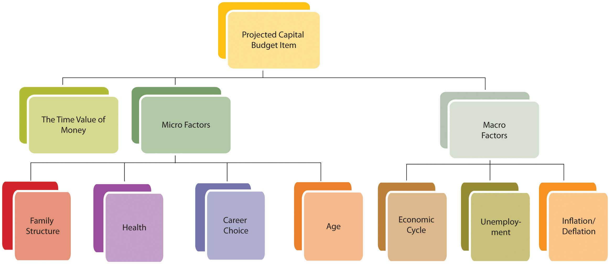

Gathering data and creating a budget—with some goals already in mind—are the initial steps in the process. Understanding the format or shape of the budget will help guide you to the kind of information you need. A comprehensive budgetA budget that includes the operating budget and the capital budget, that is, it is designed to show all aspects of financial activities.—that is, a budget covering all aspects of financial life—will include a projection of recurring incomes and expenses and of nonrecurring expenditures. (Nonrecurring income or “windfalls” should not be counted on or “budgeted for,” conservatively.) Recurring incomes would be earnings from wages, interest, or dividends. Recurring expenditures may include living expenses, loan repayments, and regular savings or investment deposits. Nonrecurring expenditures may be for capital improvements such as a new roof for your house or for purchases of durable items such as a refrigerator or a car. These are purchases that would not be made each period. A comprehensive budget diagram is shown in Figure 5.4 "Comprehensive Budget Diagram".
Figure 5.4 Comprehensive Budget Diagram

Another distinction in recognizing recurring and nonrecurring items is the time frame for each. Recurring items need to be taken care of repeatedly and are therefore considered in the short term, while the items on the capital budget may allow for long-term planning because they happen less frequently. The different time horizons for planning for recurring and nonrecurring items may allow for different strategies to reach those different goals.
A comprehensive budget is a compilation of an operating budgetThe budget the shows recurring income and expenses, usually living expenses and incomes from wages, interest, and dividends, usually related to short-term financial goals. for short-term goals involving recurring items and a capital budgetThe budget that shows nonrecurring events that are usually associated with long-term financial goals. for long-term goals involving nonrecurring items.
Recurring incomes and expenditures are usually the easiest to determine and project, as they happen consistently and have an immediate effect on your everyday living. An income statement shows incomes and expenses; cash flow statements show actual cash expenditures. Recurring incomes and expenditures are planned in the context of short-term lifestyle goals or preferences.
Look at a time period large enough to capture relevant data. Some incomes and expenditures recur reliably but only periodically or seasonally. For example, you may pay the premium on your auto insurance policy twice per year. It is a recurring expense, but it happens in only two months of the year, so you would have to look at expenditures over enough months to see it. Or your heating or cooling expenses may change seasonally, affecting your utility expenses in some months more than in others.
The time period you choose for a budget should be long enough to show intermittent items as recurring and nonrecurring items as unusual, yet small enough to follow and to manage choices within the period. For personal budgets, a month is the most common budget period to use, since most living expenses are paid at least monthly. However, it is best to use at least one full year’s worth of data to get a reasonable monthly average and to see seasonal and periodic items as they occur.
Some items may recur, but not reliably: either their frequency or their amount is uncertain. Taking a conservative approach, you should include the maximum possible amount of uncertain expenses in your budget. If income occurs regularly but the amount is uncertain, conservatively include the minimum amount. If income actually happens irregularly, it may be better just to leave it out of your budget—and your plans—since you can’t “count” on it.
Consider the following example: Mark works as a school counselor, tutors on the side, does house painting in the summer, and buys and sells sports memorabilia on the Internet. In 2006, he bought an older house with a $200,000, fixed-rate mortgage at 5.75 percent. Every year, he deposits $1,000 into his retirement account and uses some capital for home improvements. He used a car loan to buy his car. Whatever cash is left over after he has paid his bills is saved in a money market account that earns 3 percent interest. At the end of 2009, Mark is trying to draw up a budget for 2010. Since he bought the house, he has been keeping pretty good financial records, shown in Figure 5.5 "Mark’s Financial Data, 2006–2009".
Mark has five sources of income—some more constant, some more reliable, and some more seasonal. His counseling job provides a steady, year-round paycheck. House painting is a seasonal although fairly reliable source of income; in 2008 it was less because Mark fell from a ladder and was unable to paint for two months. Tutoring is a seasonal source of income, and since the school hired an additional counselor in 2008, it has decreased. Memorabilia trading is a year-round but unpredictable source of income. In 2009 he made some very lucrative trades, but in 2007 almost none. Interest income depends on the balance in the money market account. He would include his counseling, painting, and interest incomes in his budget, but should be conservative about including his tutoring or trading incomes.
Mark’s expenses are reliable and easily predictable, with a few exceptions. His accident in 2008 increased his medical expenses for that year. Both gas for the car and heating expense vary with the weather and the highly volatile price of oil; in 2008 those expenses were unusually high. Property tax increased in 2009 but is unlikely to do so again for several years.
Figure 5.5 Mark’s Financial Data, 2006–2009

Along with your known financial history, you would want to include any new information that may change your expectations. As with any forecast, the more information you can include in your projections, the more accurate it is likely to be.
Mark knows that the hiring of a new counselor has significantly cut into his tutoring income and will likely continue to do so. He will get a modest raise in his wages, but has been notified that the co-pays and deductibles on his medical and dental insurance will increase in 2010. He has just traded in his car and gotten a new loan for a “new” used car.
The personal or micro characteristics of your situation influence your expectations, especially if they are expected to change. Personal factors such as family structure, health, career choice, and age have significant influence on financial choices and goals. If any of those factors is expected to change, your financial situation should be expected to change as well, and that expectation should be included in your budget projections.
For example, if you are expecting to increase or decrease the size of your family or household, that would affect your consumption of goods and services. If you anticipate a change of job or of career, that will affect your income from wages. A change in health may result in working more or less and thus changing income from wages. There are many ways that personal circumstances can change, and they can change your financial expectations, choices, and goals. All these projected changes need to be included in the budget process.
Macro factors affecting your budget come from the context of the wider economy, so understanding how incomes and expenses are created is useful in forming estimates. Incomes are created when labor or capital (liquidity or assets) is sold. The amount of income created depends on the quantity sold and on the price.
The price of labor depends on the relative supply and demand for labor reflected in unemployment rates. The price of liquidity depends on the relative supply and demand for capital reflected in interest rates. Unemployment rates and interest rates in turn depend on the complex, dynamic economy.
The economy tends to behave cyclically. If the economy is in a period of contraction or recession, demand for labor is lower, competition among workers is higher, and wages cannot be expected to rise. As unemployment rises, especially if you are working in an industry that is cyclically contracting with the economy, wages may become unreliable or increasingly risky if there is risk of losing your job. Interest rates are, as a rule, more volatile and thus more difficult to predict, but generally tend to fall during a period of contraction and rise in a period of expansion. A budget period is usually short so that economic factors will not vary widely enough to affect projections over that brief period. Still, those economic factors should inform your estimates of potential income.
Expenses are created when a quantity of goods or services is consumed for a price. That price depends on the relative supply of and demand for those goods and services and also on the larger context of price levels in the economy. If inflation or deflation is decreasing or increasing the value of our currency, then its purchasing power is changing and so is the real cost of expenses. Again, as a rule, the budget period should be short enough so that changes in purchasing power won’t affect the budget too much; still, these changes should not be ignored. Price levels are much quicker to change than wage levels, so it is quite possible to have a rise in prices before a rise in wages, which decreases the real purchasing power of your paycheck.
If you have a variable rate loan—that is, a loan for which the interest rate may be adjusted periodically—you are susceptible to interest rate volatility. (This is discussed at length in Chapter 16 "Owning Bonds".) You should be aware of that particular macro factor when creating your budget.
Macroeconomic factors are difficult to predict, as they reflect complex scenarios, but news about current and expected economic conditions is easily available in the media every day. A good financial planner will also be keeping a sharp eye on economic indicators and forecasts. You will have a pretty concrete idea of where the economy is in its cycles and how that affects you just by seeing how your paycheck meets your living expenses (e.g., filling up your car with gas or shopping for groceries). Figure 5.7 "Factors for Determining a Projected Operating Budget Item" suggests how personal history, microeconomic factors, and macroeconomic factors can be used to make projections about items in your budget.
Figure 5.7 Factors for Determining a Projected Operating Budget Item

Using his past history, current information, and understanding of current and expected macroeconomic factors, Mark has put together the budget shown in Figure 5.8 "Mark’s 2010 Budget".
To project incomes, Mark relied on his newest information to estimate his wages and tutoring income. He used the minimum income from the past four years for memorabilia sales, which is conservative and reasonable given its volatility. His painting income is less volatile, so his estimate is an average, excluding the unusual year of his accident. Interest income is based on his current money market account balance, which is adjusted for an expected drop in interest rates.
Mark expects his expenses to be what they were in 2009, since his costs and consumption are not expected to change. However, he has adjusted his medical and dental insurance and his car lease payments on the basis of his new knowledge.
The price of gas and heating oil has been extraordinarily volatile during this period (2006–2009), affecting Mark’s gas and heating expense, so he bases his estimates on what he knows about his expected consumption and the price. He knows he drives an average of about 15,000 miles per year and that his car gets about 20 miles per gallon. He estimates his gas expense for 2010 by guessing that since oil price levels are about where they were in 2007, gas will cost, on average, what it did then, which was $2.50 per gallon. He will buy, on average, 750 gallons per year (15,000 miles ÷ 20 mpg), so his total expense will be $1,875. Mark also knows that he uses 500 gallons of heating oil each year. Estimating heating oil prices at 2007 levels, his cost will be about the same as it was then, or $1,200.
Mark knows that the more knowledge and information he can bring to bear, the more accurate and useful his estimates are likely to be.
Figure 5.8 Mark’s 2010 Budget

Income remaining after the deduction of living expenses and debt obligations, or free cash flowIncome remaining after the deduction of living expenses and debt obligations that is available for capital expenditures or investment., is cash available for capital expenditures or investment. Capital expenditures are usually part of a long-term plan of building an asset base. Investment may also be part of a longer-term plan to build an asset base or to achieve a specific goal such as financing education or retirement.
Long-term strategies are based on expected changes to the micro factors that shape goals. For example, you want to save for retirement because you anticipate aging and not being as willing or able to sell labor. Expanding or shrinking the family structure may create new savings goals or a change in housing needs that will indicate a change in asset base (e.g., buying or selling a house).
Some changes will eliminate a specific goal. A child finishing college, for example, ends the need for education savings. Some changes will emphasize the necessity of a goal, such as a decline in health underscoring the need to save for retirement. As personal factors change, you should reassess your longer-term goals and the capital expenditure toward those goals because long-term goals and thus capital expenditures may change with them.
While many personal factors are relatively predictable over the long-term (e.g., you will get older, not younger), the macroeconomic factors that will occur simultaneously are much harder to predict. Will the economy be expanding or contracting when you retire? Will there be inflation or deflation? The further (in time) you are from your goals, the harder it is to predict those factors and the less relevant they are to your budgeting concerns. As you get closer to your goals, macro factors become more influential in the assessment of your goals and your progress toward them.
Since long-term strategies happen over time, you should use the relationships between time and value to calculate capital expenditures and progress toward long-term goals. Long-term goals are often best reached by a progression of steady and even steps; for example, a saving goal is often reached by a series of regular and steady deposits. Those regular deposits form an annuity. Knowing how much time there is and how much compounding there can be to turn your account balance (the present value of this annuity) into your savings goal (its future value), you can calculate the amount of the deposits into the account. This can then be compared to your projected free cash flow to see if such a deposit is possible. You can also see if your goal is too modest or too ambitious and should be adjusted in terms of the time to reach a goal or the rate at which you do.
Capital expenditures may be a one-time investment, like a new roof. A capital expenditure may also be a step toward a long-term goal, like an annual savings deposit. That goal should be assessed with each budget, and that “step” or capital expenditure should be reviewed. Figure 5.10 "Factors for Determining the Projected Capital Budget Item" shows the relationship of factors used to determine the capital budget.
Figure 5.10 Factors for Determining the Projected Capital Budget Item
Mark’s 2010 budget (shown in Figure 5.8 "Mark’s 2010 Budget") projects a drop in income and disposable income, and a rise in living expenses, leaving him with less free cash flow for capital expenditures or investments. He knows that his house needs a new roof (estimated cost = $15,000) and was hoping to have that done in 2010. However, that capital expenditure would create negative net cash flow, even if he also uses the savings from his money market account. Mark’s budget shows that both his short-term lifestyle preferences (projected income and expenses) and progress toward his longer-term goals (property improvement and savings) cannot be achieved without some changes and choices. What should those changes and choices be?
Recurring incomes and expenses
Projecting recurring incomes and expenses involves using
Projecting capital expenditures involves using the following: